🔴 Clinical Problem
- Extreme class imbalance: 46.9:1 ratio
- Small lesions: <1% field-of-view (~8,800 px²)
- Dual requirements: Triage + Localization
- Interpretability gap: Black-box AI limitations
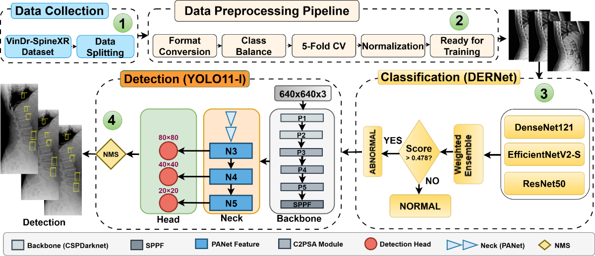
Automated analysis of spinal radiographs is essential for early diagnostic triage but remains challenging due to the visual subtlety and small scale of many spinal lesions. We propose a unified cascaded deep learning framework designed to improve screening sensitivity while maintaining precise lesion localization. The diagnostic workflow is structurally decoupled into two stages. First, DERNet, a heterogeneous ensemble of EfficientNetV2-S, DenseNet121, and ResNet50, performs high-sensitivity binary triage to filter normal radiographs. Abnormal cases are subsequently routed to a customized YOLO11-L detector for fine-grained lesion localization. Experimental evaluation on the VinDrSpineXR benchmark demonstrates strong performance, achieving an AUROC of 91.03% for image-level classification and a mAP@0.5 of 40.10% for lesion-level detection. To enhance clinical interpretability, we integrate explainability techniques including LIME, Grad-CAM, and qualitative visualization, ensuring that predictions are aligned with anatomically relevant structures. The proposed framework provides an interpretable and efficient solution for automated spinal radiograph analysis. Additional resources, including extended experimental analyses, error analysis, qualitative visualizations, real-time demos, and reproducibility resources, are available at the DERNet project website.
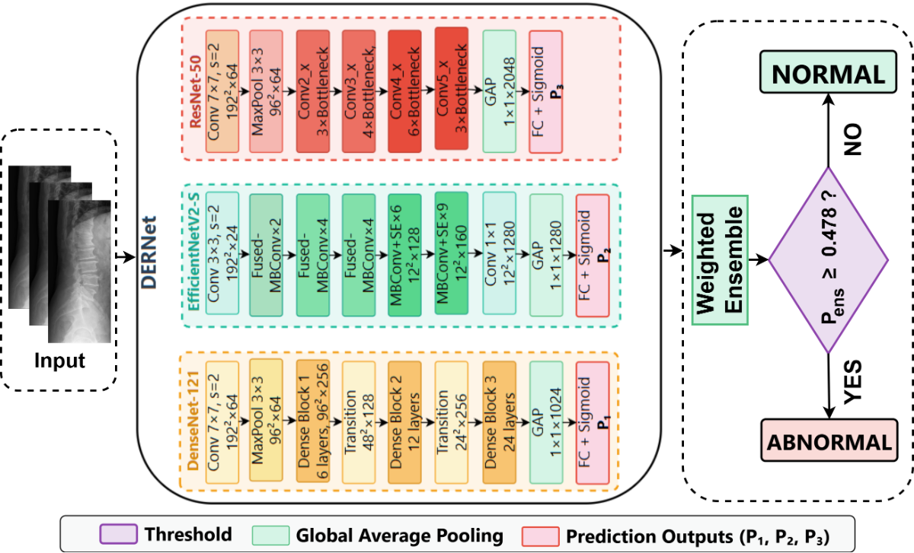
Figure: Cascaded DERNet-YOLO11 dual-stage architecture combining ensemble classification (Stage 1) and object detection (Stage 2) for automated spine lesion triage and localization.
Specific parameter settings for the DERNet triage threshold, YOLO11 detector, and spinal radiograph enhancement.
Optimal Threshold $\tau^* = 0.478$
Selected via grid search to maximize F1-score on validation set.
| Method | $\tau^*$ | F1 (%) |
|---|---|---|
| F1-Max | 0.478 | 83.09 |
| Youden's J | 0.462 | 82.84 |
| Default | 0.500 | 82.63 |
| Balanced Acc | 0.485 | 83.01 |
Why F1-Max? More robust to class imbalance (46.9:1) than Youden or Accuracy.
optimized on COCO dataset
Hyperparameters determined via combination search:
| Param | Value | Rationale |
|---|---|---|
| $\gamma$ (Focal) | 2.0 | Balances easy/hard examples |
| $\alpha$ (Focal) | 0.25 | Optimal for minority foreground |
| $\lambda_{box}$ | 7.5 | Box regression weight |
| $\lambda_{cls}$ | 0.5 | Class loss weight |
Augmentation: Copy-Paste ($\alpha=0.2$) utilized to address severe class imbalance (46.9:1).
Strategy: CLAHE enhancement to mitigate exposure variance.
| Param | Value | Purpose |
|---|---|---|
| Clip Limit | 2.0 | Limits contrast noise |
| Grid Size | $8 \times 8$ | Local equalization |
| Scale $\beta$ | 255 | 8-bit mapping |
Preprocessing ensures consistent feature extraction across 8,389 training images.
We leveraged the VinDr-SpineXR [20] benchmark, utilizing 8,389 images for training and 2,077 for testing. The dataset exhibits a severe class imbalance, with Osteophytes dominating the annotations at 82.1%, corresponding to 12,556 bounding boxes. In contrast, clinically important minority classes are much less frequent, including Disc Space Narrowing at 6.0%, Surgical Implants at 2.8%, and Foraminal Stenosis at 2.5%. The rarest class, Vertebral Collapse, comprises only 268 annotations and accounts for 1.8% of the dataset. This yields a class imbalance ratio of 46.9:1, meaning that Osteophytes appear nearly 47 times more often than Vertebral Collapse.
To mitigate radiographic exposure variance, Contrast Limited Adaptive Histogram Equalization (CLAHE) computes the enhanced intensity $I'(i, j)$ by mapping the local cumulative distribution function (CDF), as formulated in Eq. 1.
$$I'(i, j) = \beta \cdot \frac{\mathrm{CDF}_{\Omega_k}(I(i, j)) - \mathrm{CDF}_{\min}}{|\Omega_k| - \mathrm{CDF}_{\min}}$$
Here, Eq. 1 utilizes an $8 \times 8$ tile grid to define the local region cardinality ($|\Omega_k|$) and maps the normalized CDF back to the intensity range using $β = 255$. A clip limit $τ = 2.0$ suppresses contrast over-amplification and noise in homogeneous bone structures prior to normalization and 5-fold cross-validation.
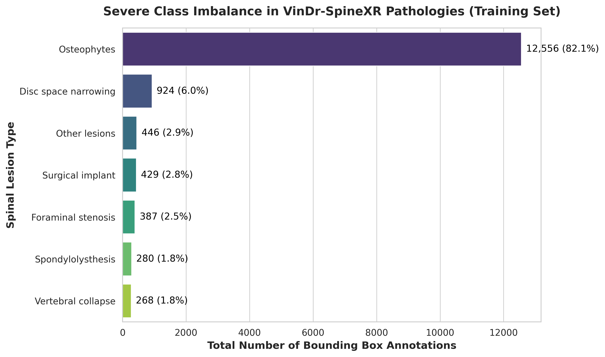
Comprehensive analysis of the proposed DERNet model demonstrating superior accuracy and clinical relevance.

Post-hoc visualization techniques highlight important regions for mild, moderate, and severe cirrhosis classification.
Why it matters: Confirms the model focuses on clinically meaningful structures.
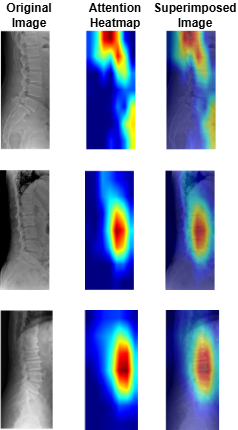
Grad-CAM visualizations indicating regions critical for cirrhosis stage prediction.
Why it's better: Provides transparent, clinically interpretable validation.
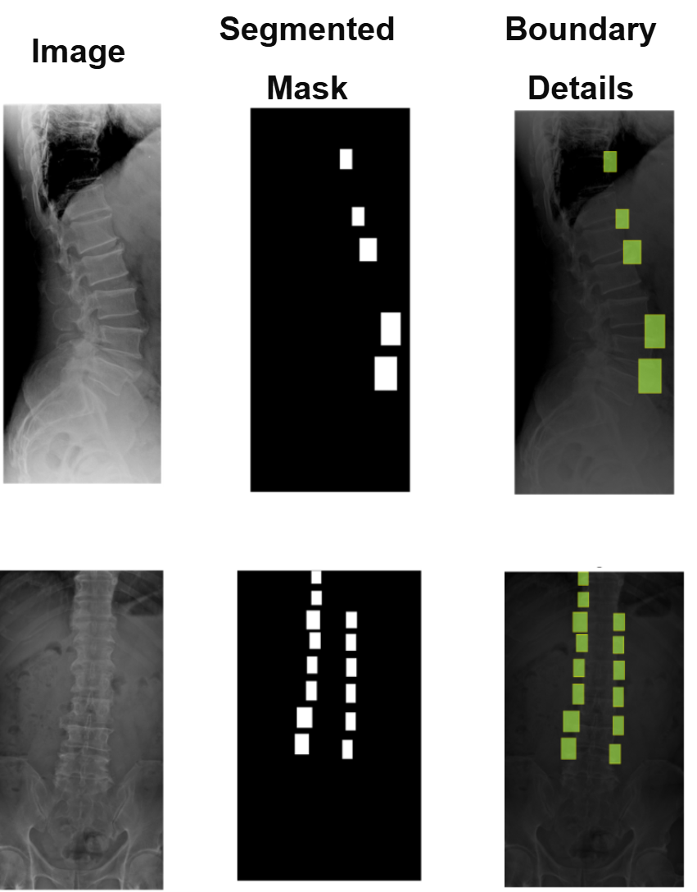
Comparison of the ground truth mask and predicted mask along with error analysis for the DERNet model.
Why it's better: DERNet approach preserves local anatomical details often missed by Transformers.
Performance comparison of DERNet ensemble (DenseNet-121 + EfficientNetV2-S + ResNet-50) against individual models and baseline using 5-fold cross-validation.
| Model | Parameters | AUROC (%) | Sensitivity (%) | Specificity (%) | F1-Score (%) | Weight |
|---|---|---|---|---|---|---|
| DenseNet-121 | 8.0M | 86.93 | 80.39 | 79.32 | 79.55 | 0.42 |
| EfficientNetV2-S | 21.5M | 89.44 | 70.80 | 91.12 | 79.34 | 0.32 |
| ResNet-50 | 25.6M | 88.88 | 82.72 | 78.13 | 80.15 | 0.26 |
| VinDr Ensemble [2] | - | 88.61 | 83.07 | 79.32 | 81.06 | - |
| HealNNet [15] | - | 88.84 | - | - | 81.20 | - |
| DERNet Ensemble | 18.3M avg | 91.03 | 84.91 | 81.68 | 83.09 | - |
Evaluation of YOLO11-L for spinal lesion localization across 7 pathology types with comparison to baseline methods.
| Method | LT2 | LT4 | LT6 | LT8 | LT10 | LT11 | LT13 | mAP@0.5 |
|---|---|---|---|---|---|---|---|---|
| Dino [19] | 16.58 | 22.87 | 28.53 | 32.71 | 59.78 | 41.28 | 3.24 | 29.28 |
| RetinaNet [20] | 14.53 | 25.35 | 41.67 | 32.14 | 65.49 | 51.85 | 5.30 | 28.09 |
| Faster R-CNN [9] | 22.66 | 35.99 | 49.24 | 31.68 | 65.22 | 51.68 | 2.16 | 31.83 |
| Sparse R-CNN [10] | 20.09 | 32.67 | 48.16 | 45.32 | 72.20 | 49.30 | 5.41 | 33.15 |
| VinDr-SpineXR [2] | 21.43 | 27.36 | 34.78 | 41.29 | 62.53 | 43.39 | 4.16 | 33.56 |
| EGCA-Net [18] | 22.36 | 29.75 | 36.73 | 44.69 | 66.58 | 50.41 | 2.09 | 36.09 |
| YOLOv6 | 23.60 | 34.90 | 38.40 | 37.50 | 67.30 | 43.30 | 3.35 | 35.50 |
| YOLOv12 | 23.60 | 37.70 | 37.00 | 45.90 | 67.00 | 49.80 | 4.01 | 37.90 |
| Ours (YOLO11-L) | 26.70 | 41.40 | 40.60 | 54.80 | 74.10 | 51.20 | 2.99 | 40.10 |
(*) LT2, LT4, LT6, LT8, LT10, LT11, LT13 denotes for disc space narrowing, foraminal stenosis, osteophytes, spondylolisthesis, surgical implant, vertebral collapse and other lesions, respectively.
Mid-scale lesions are represented as bounding-box annotations occupying approximately $32 \times 32$ to $96 \times 96$ pixels on a normalized $640 \times 640$ input. In addition, fine-grained pathology signals are defined as minute localized features occupying less than $1\%$ of the field-of-view, corresponding to lesions smaller than the mid-scale range (roughly below $32 \times 32$ pixels). These subtle boundary disruptions, such as those seen in foraminal stenosis, are preserved across the deeper layers of the detector and are explicitly emphasized by the proposed multi-scale feature aggregation strategy.
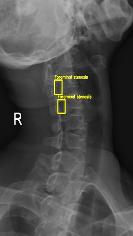
| Component Removed | mAP@0.5 | ΔmAP | Impact Level |
|---|---|---|---|
| Full Model (Baseline) | 40.10% | - | - |
| - Copy-Paste Augmentation | 37.7% | -2.40% | High |
| - Mosaic Augmentation | 37.1% | -2.94% | High |
| - C2PSA Module (Attention) | 38.5% | -1.54% | Medium |
| - Focal Loss | 38.9% | -1.14% | Medium |
| - Task-Aligned Assignment | 39.2% | -0.84% | Low |
| Model | Parameters | FLOPs | Inference Time | Training Time | GPU Memory |
|---|---|---|---|---|---|
| DenseNet-121 | 7.98M | 5.72G | 18ms (~56 FPS) | ~12h (60 epochs) | 3.2GB |
| EfficientNetV2-S | 21.46M | 8.40G | 24ms (~42 FPS) | ~15h (60 epochs) | 4.8GB |
| ResNet-50 | 25.56M | 11.6G | 28ms (~36 FPS) | ~14h (60 epochs) | 5.1GB |
| Ensemble (Average) | 18.33M | 8.57G | 70ms (~14 FPS) | ~41h total | 4.37GB avg |
| YOLO11-L | 25.27M | 164.9G | 22ms (~45 FPS) | ~18.5h (50 epochs) | 6.2GB |
| Combined Pipeline | 43.6M | 173.47G | ~92ms (~11 FPS) | ~59.5h total | 10.57GB peak |
Detailed examination of model performance through confusion matrices and analysis of misclassified instances.
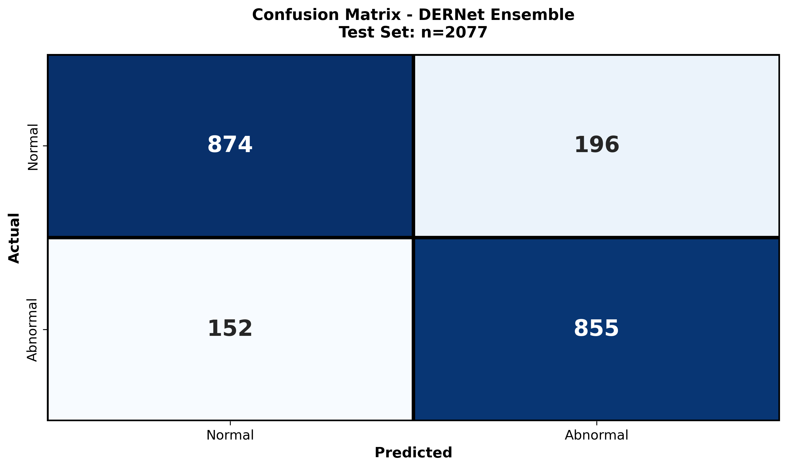
The class-wise confusion matrix provides a granular breakdown of the model's diagnostic accuracy across all seven spinal lesion categories. By visualizing true positives versus misclassifications, we quantitatively assess the impact of severe class imbalance (e.g., distinguishing rare "Vertebral collapse" from frequent "Osteophytes"). The matrix reveals high diagonal density, confirming robust sensitivity even for minority classes, while highlighting specific inter-class ambiguities—such as the subtle overlap between "Disc space narrowing" and "Spondylolisthesis"—that guided our refined architectural choices.
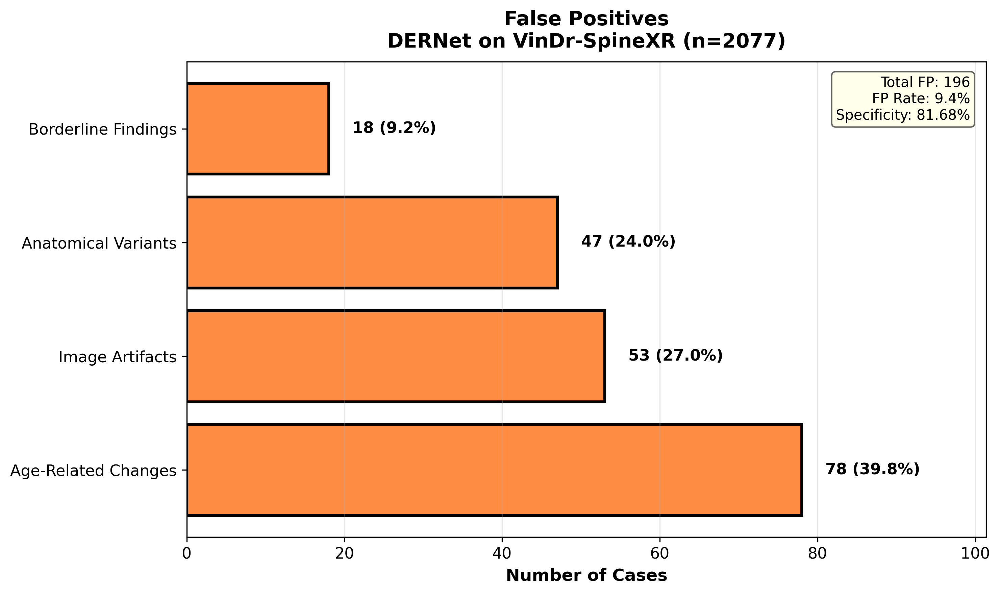
A systematic investigation of False Positives (FPs) elucidates the model's decision boundaries in complex radiological environments. We examine instances where normal anatomical variations, high-density bone structures, or external artifacts (e.g., surgical clips) were incorrectly flagged as pathological. This analysis is critical for clinical deployment, as reducing FPs—particularly in triage settings—minimizes unnecessary follow-ups. Our findings show that the majority of FPs occur in low-contrast regions, necessitating the integration of context-aware attention mechanisms to suppress background noise.
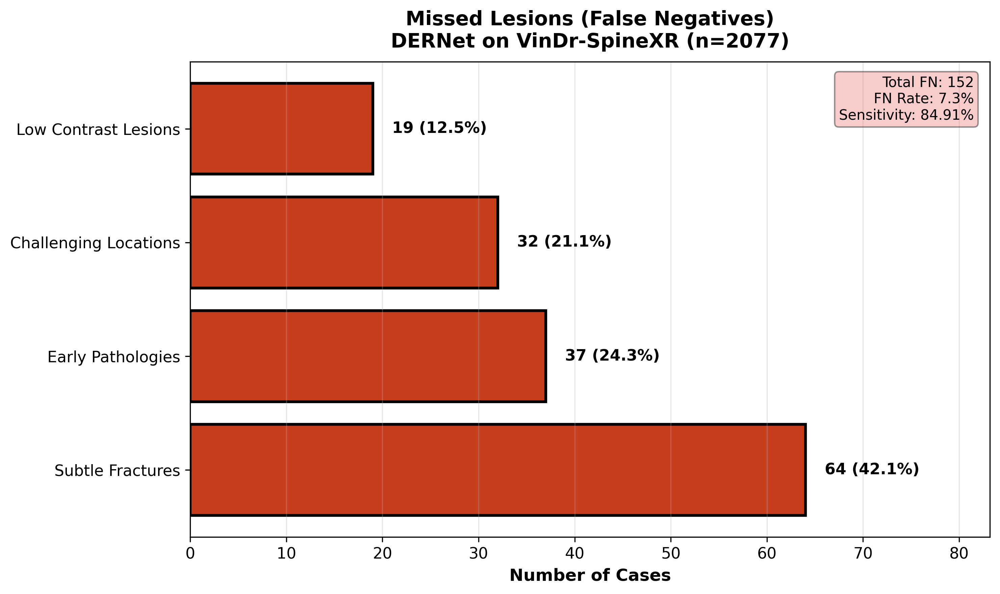
A comprehensive review of False Negatives (FNs) uncovers the morphological characteristics of spinal lesions that evade detection. We analyze 'missed' cases to identify patterns such as extreme subtlety (lesions occupying <1% of the FOV), occlusion by overlapping structures, or atypical visual presentations. Understanding these failure modes—specifically in 'Other lesions' and early-stage 'Foraminal stenosis'—drives future improvements in multi-scale feature extraction. This rigorous audit ensures transparency and targeted refinement, directly addressing the safety-critical requirement of minimizing missed diagnoses in clinical workflows.
Summary of major breakthroughs in automated spine pathology triage and localization.
Robust Classification
DERNet ensemble: AUROC 91.03%, Sensitivity 84.91%, Specificity 81.68%, F1-Score 83.09% via weighted fusion of DenseNet-121, EfficientNetV2-S, ResNet-50.
Class Imbalance Mitigation
Handled 46.9:1 class imbalance using Copy-Paste augmentation and Focal Loss, achieving mAP@0.5 40.10±0.3% for 7-class detection.
Explainable AI (XAI) Integration
LIME, Grad-CAM, and Qualitative Visualization provide saliency maps and visual validation, ensuring model focuses on clinically relevant spinal regions for transparent diagnosis.
Real-Time Clinical Applicability
~11 FPS (92ms/image) on RTX 3050 GPU for real-time spine triage with 7 pathology localization and bounding-box visual explanations.
Real-world implementation of the cascaded DERNet and YOLO11 framework for automated spinal lesion triage, precise localization, and explainable AI-driven diagnosis visualization in clinical workflows
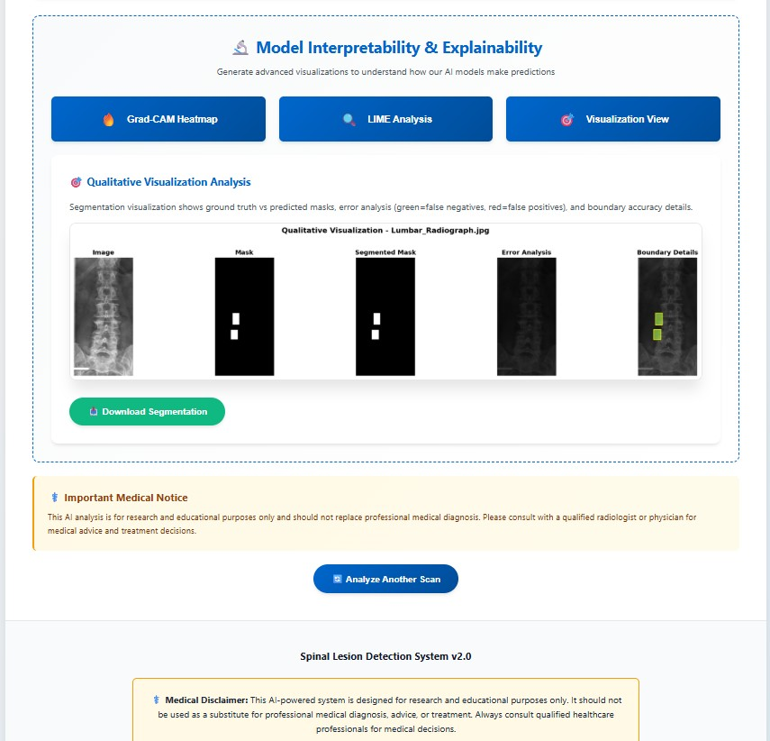
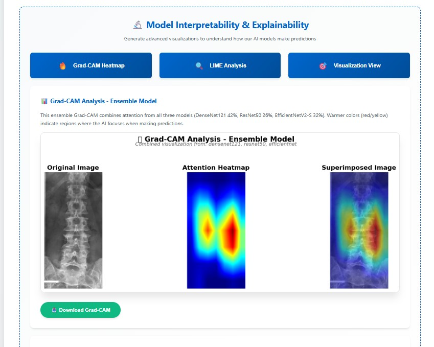
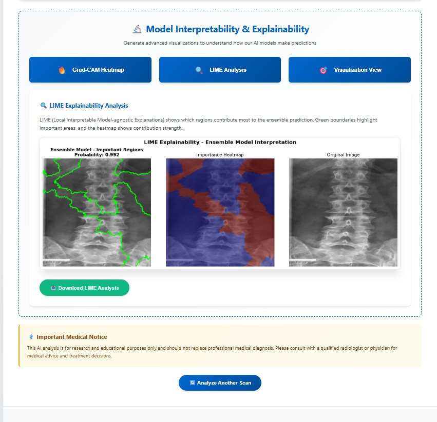
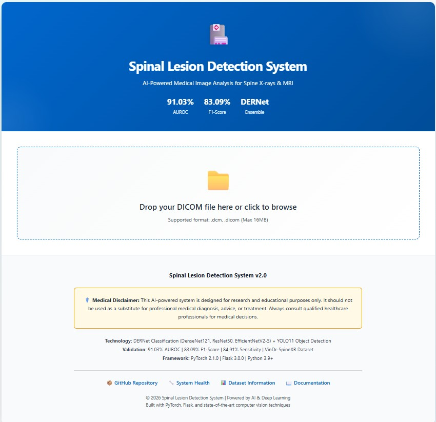
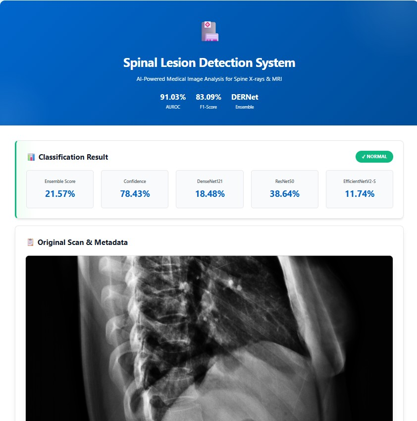
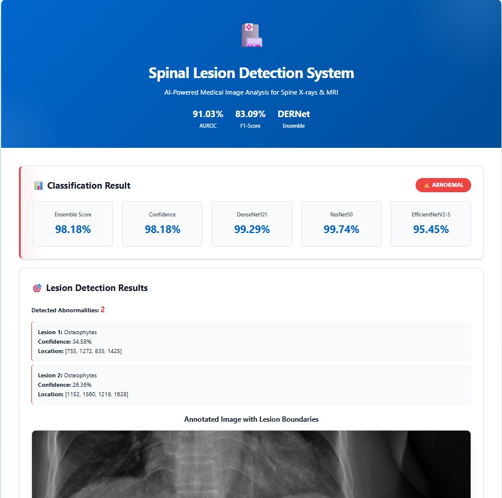
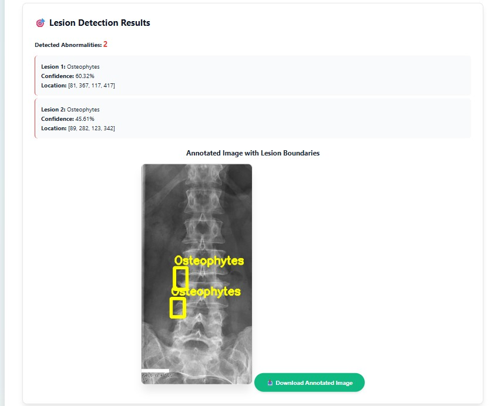
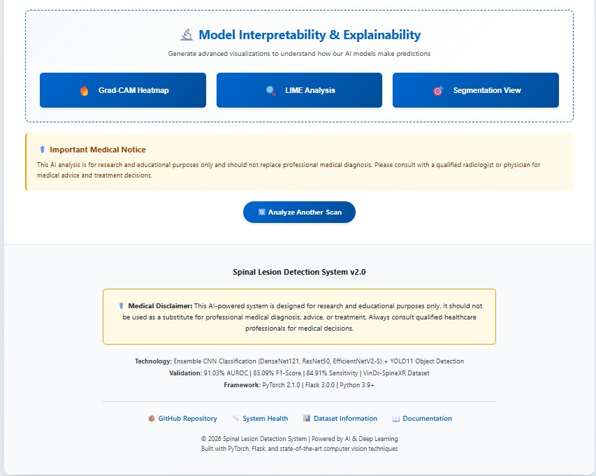
Prospective research avenues to enhance DERNet's clinical impact and deployment.
@article{DERNet2026,
author = {Anonymized Authors},
title = {A Cascaded DERNet and YOLO11 Framework for Spinal Lesion Triage and Localization with Explainable AI},
journal = {Under Review},
year = {2026},
}